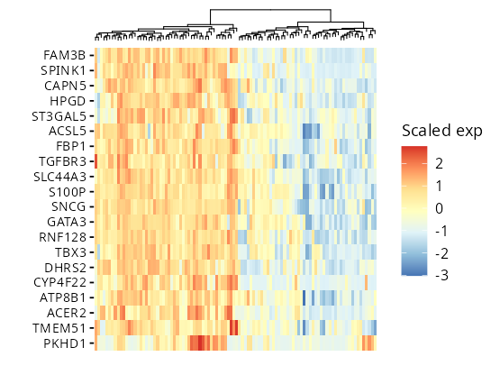
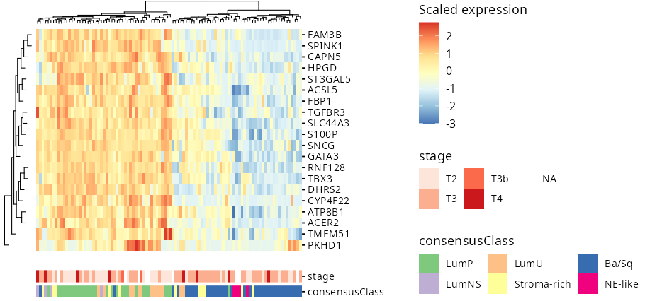

# install.packages("devtools")
devtools::install_github("csgroen/ggheatmapper")patchwork: mix heatmaps, dendrograms, annotations and any ggplot or grob
ggtree integration for hierarchical tree sidebarstidyverse‑friendly API: works with tibbles and pipes … and more!ggheatmapper works with matrices:
library(ggheatmapper)
data(tcgaBLCA_ex)
head(tcgaBLCA_ex$gexp, 20) |>
ggheatmap(center = TRUE,
scale = TRUE,
show_colnames = FALSE,
colors_title = "Scaled exp")
But shines with tidy data, where each column represents a variable and each row represents and observation.
When working with biological data (RNA-seq, single-cell, etc), often data is stored as genes x samples. But this makes it challenging to include other metadata available for samples. Here, I show how to manipulate data of this type to plot using ggheatmapper:
library(ggheatmapper)
data(tcgaBLCA_ex)
exp_mat <- head(tcgaBLCA_ex$gexp, 20)
sample_annot <- tcgaBLCA_ex$sample_annot
exp_mat |>
t() |>
as.data.frame() |>
rownames_to_column("sample") |>
left_join(sample_annot, by = "sample") |>
ggheatmap(
rowv = rownames(exp_mat),
colv = "sample",
scale = TRUE,
center = TRUE,
colors_title = "Scaled expression",
show_colnames = FALSE) |>
add_tracks(track_columns = c("stage", "consensusClass"), track_prop = 0.1,
track_colors = list("stage" = "Reds", "consensusClass" = "Accent"))
Please file issues for bugs or requests